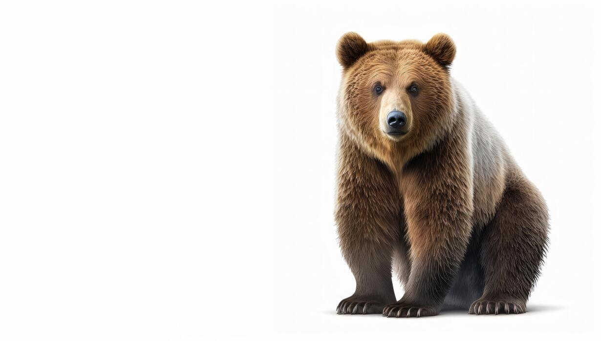

The brown bear is a large mammal that lives in North America, Europe, and Asia. It is known for its strength, size, and thick fur.
This page was updated for Lab 2.
To read more about the brown bear, visit: Click here
